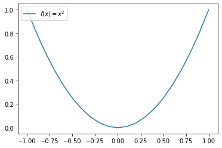
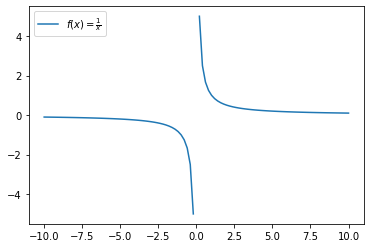

Find the roots of a function#
\(y = f(x)=x^3-x-2\)
Brute-force#
import numpy as np
# tolerance
tol = 1e-3
iterations = 0
for x in np.arange(1,2,0.0001):
y = x**3 - x - 2
iterations = iterations + 1
if abs(y) < tol:
print("The root of the function is {} found after {} iterations".format(x, iterations))
break
else:
print("Solution did not converge to our criteria")
The root of the function is 1.5212999999999426 found after 5214 iterations
Bisection approach#
\(y = f(x)=x^3-x-2\)
# y = f(x)=x^3-x-2
# Import modules
import math
import numpy as np
# Initial guess
x1 = 1
x2 = 2
# Mid guess
x = 0
# Set a tolerance
tolerance = 1e-5
# Iterate to a maximum of 1000 iterations
max_iterations = 100
iterations = 0
for i in np.arange(max_iterations):
# Compute forces for theta1 and theta2
delta1 = x1**3 - x1 -2
delta2 = x2**3 - x2 -2
# Compute the mid-value of theta
x = (x1 + x2)/2
# Calculate the difference delta for the mid-theta
delta = x**3 - x -2
if((delta * delta1) > 0):
x1 = x
else:
x2 = x
# Final values at the end of iterations
iterations = i
if (abs(delta) <= tolerance):
break
else: #No break
print("Solution did not converge!")
print('After {} iterations the root of f(x) {} {:.2E}'.format(iterations, x, delta))
After 17 iterations the root of f(x) 1.5213813781738281 9.93E-06
Drawbacks of bisection method#
The convergence of the bisection method is slow as it is simply based on halving the interval.
If one of the initial guesses is closer to the root, it will take larger number of iterations to reach the root.
If a function f(x) is such that it just touches the x-axis: \(f(x) = x^2 = 0\)
The function has a singularity \(1/0 = \infty\) or has no solution but changes sign \(f(x) = 1/x\)
# f(x) = x**2 = 0
import matplotlib.pyplot as plt
import numpy as np
def f(x):
with np.errstate(divide='ignore', invalid='ignore'):
return x**2
fx_name = r'$f(x)=x^2$'
x = np.arange(-1,1.1,0.1)
y = f(x)
plt.plot(x, y, label=fx_name)
plt.legend(loc='upper left')
plt.show()

import numpy as np
import matplotlib.pyplot as plt
def f(x):
with np.errstate(divide='ignore', invalid='ignore'):
return 1/x
fx_name = r'$f(x)=\frac{1}{x}$'
x=np.linspace(-10,10,101)
y=f(x)
plt.plot(x, y, label=fx_name)
plt.legend(loc='upper left')
plt.show()
